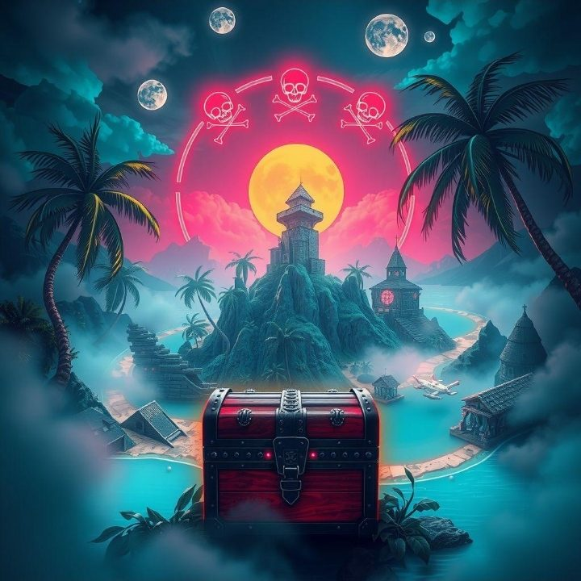

50 niveaux d'énigmes inspirées de La Réunion : culture, logique, codes secrets. Une seule bonne réponse par niveau. Saurez-vous ouvrir le coffre ?
Votre progression est gardée sur votre téléphone. À la fin, vous pourrez envoyer votre score pour participer.